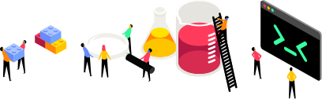
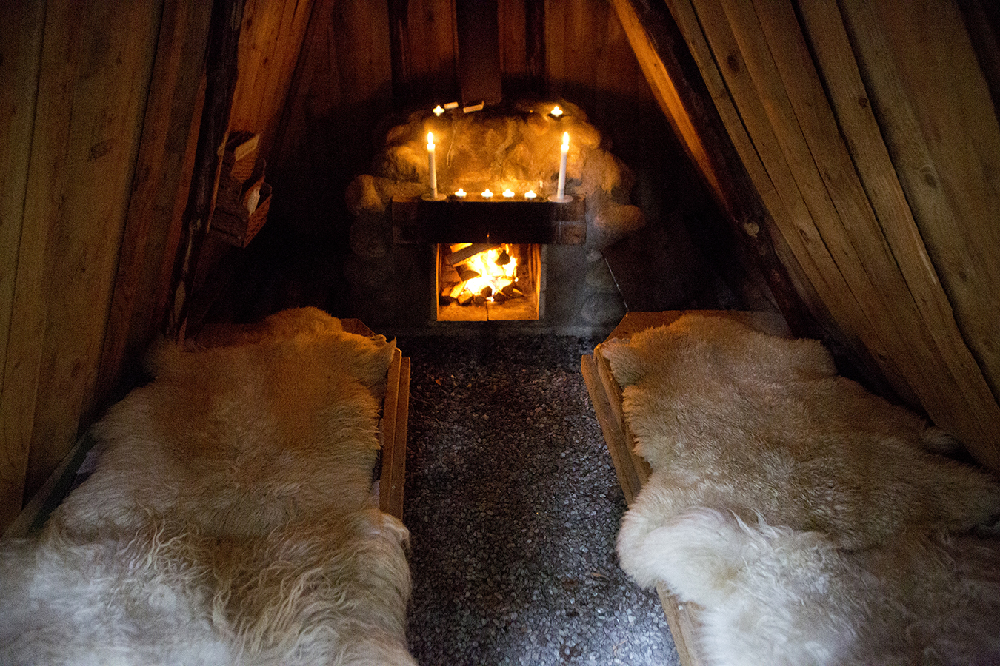
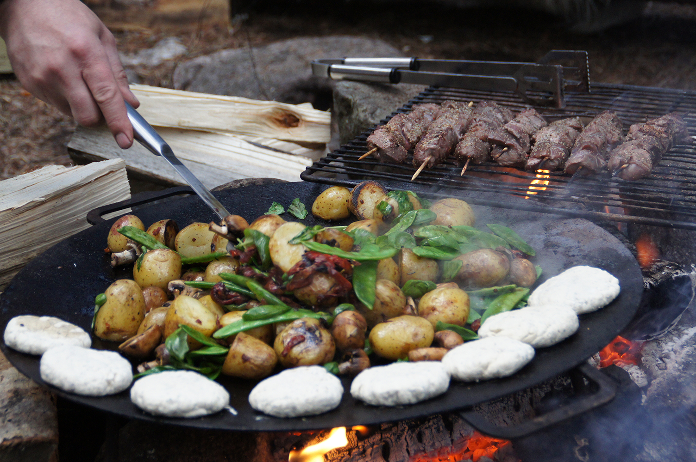
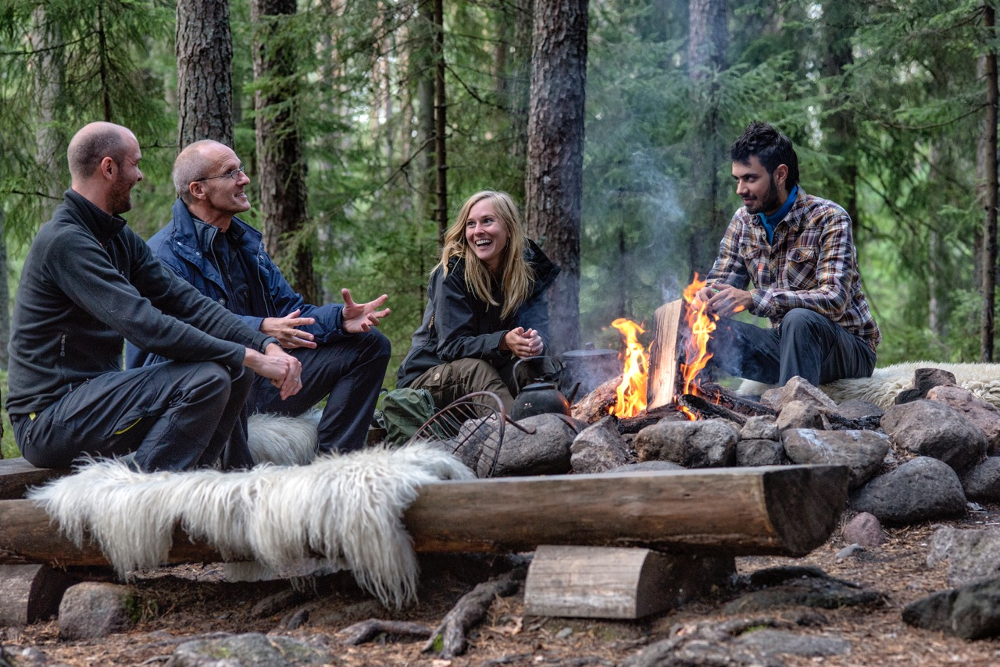

<!DOCTYPE html>

<html>
    <head>
        <title>Iteam Kickoff</title>
        <link href="style.css" rel="stylesheet" type="text/css">
        <link href="https://fonts.googleapis.com/css?family=Roboto" rel="stylesheet">
        <Meta charset="Utf-8">
        <meta name="viewport" content="width=device-width, initial-scale=1.0">
        <link rel="stylesheet" href="https://unpkg.com/leaflet@1.4.0/dist/leaflet.css"
        integrity="sha512-puBpdR0798OZvTTbP4A8Ix/l+A4dHDD0DGqYW6RQ+9jxkRFclaxxQb/SJAWZfWAkuyeQUytO7+7N4QKrDh+drA=="
        crossorigin=""/>
    </head>

    <body>
        <nav>
            <div class="navigation-icon-wrapper">
                <div class="navigation-icon">
                    <div></div>
                    <div></div>
                    <div></div>
                </div>
            </div>
                <ul id="menu">
                    <li><a href="#schema">SCHEMA</a></li> 
                    <li><a href="#kolarbyn">OM KOLARBYN</a></li>
                    <li><a href="#info">VIKTIG INFO</a></li> 
                    <li><a href="#packlista">PACKLISTA</a></li>
                    <li><a href="#aktiviteter">AKTIVITETER</a></li> 
                    <li><a href="#resa">TRANSPORT</a></li> 
                </ul>
        </nav>

        <section class="hero">
            <div class="hero-column">
                       
                <h2>Iteam Kickoff 9-10 maj 2019</h2>
                <h3>Kolarbyn eco-lodge</h3> 
            </div>
        </section>

        <section class="section" id="schema">
             <div class="main-column">
                <div>
                    <h1>Schema dag 1</h1>
                    <p>
                        <strong>12:00</strong>
                        Samling och enklare lunch i Västerås.
                        <br>
                        <br>
                        <strong>13:00</strong>
                        Busstransport till Kolarbyn Eco-Lodge.
                        <br>
                        <br>
                        <strong>14.00 - 15:30</strong>
                        Ankoms till Kolarbyn. Vi börjar med fika och incheckning samt rundtur i Kolarbyn. 
                        <br>
                        <br>
                        <strong>15.30</strong>
                        Ni träffar våra guider från Jonas Vildmark som visar er bushcraftens grunder (2 timmar).  
                        <br>
                        <br>
                        <strong>16:00-19:00</strong> 
                        Hugga ved samt fri lek med möjlighet till bad, vandring eller kajak.
                        <br>
                        <br>
                        <strong>19.00-21.00</strong> 
                        Middag serveras och tillagas för oss över elden och serveras i samlingsmilan.
                </div>
                
                <div>
                    <h1>Schema dag 2</h1>
                    <p>
                        <strong>09:00 </strong> 
                        Frukost hämtar vi ur köksförrådet och tillagar själva över elden. 
                        <br>
                        <br>
                        <strong>11:00 </strong>  
                        Utcheckning och hemresa
                  </p>
                        
                </div>
            </div>
        </section>

        <div class="backgroundImage"></div>

        <section class="section" id="kolarbyn">
            <div class="main-column">
                <div>
                    <h1>Om Kolarbyn</h1>
                </div>
                <div>
                        <p>
                        Kolarbyn Eco Lodge, även kallat Sveriges mest primitiva vandrarhem.
                        Här finns ingen elektricitet, inga duschar, ingen materiell lyx alls, 
                            – bara naturen och mystiken. Länk till kolarbyn.
                        <br />  
                        <br /> 
                        Du bor mitt i granskogen, bredvid bäcken som porlar och sjön som böljar. 
                        12 traditionella kolarkojor väntar på dig. 
                        Alla kolarkojor har en eldstad och du hugger själv din egen ved och kan 
                        plocka svamp och bär i skogen.
                        <br />
                        <br />
                        <a link href="https://kolarbyn.se/">Besök Kolarbyns hemsida för mer info.</a>
                    </p>
                    
                </div>
            </div>     
        </section>

        <section id="info" class="section">
            <div class="main-column">
                <div>
                    <h1>Viktig info!</h1>
                    <p>
                        <strong>Incheckning</strong>
                        <br>
                        <br>
                        Vi går igenom allt ni behöver veta för er vistelse vid incheckningen 
                        och alla gäster förväntas delta i rundvandringen.
                        <br>
                        <br>
                        Kolarbyn har ingen reception och är inte bemannat på natten. 
                        <br>
                        <br>
                        <strong>Hygien</strong>
                        <br>
                        <br>
                        I Kolarbyn finns utedass med papper, vatten och tvål. Vi har ingen dusch men ta gärna ett dopp i Skärsjön. Borsta tänder och tvätta ansiktet gör man i bäcken. 
                        <br>
                        <br>
                    </p>
                </div>
                <div>
                    <p>
                        <strong>Mat, disk & sopor</strong>
                        <br>
                        <br>
                        Gäster som övernattar tillagar själva sin frukost över elden, hämtar dricksvatten i källan och diskar vid bäcken samt sopsorterar. 
                        <br>
                        <br>
                        Vid eventuell kvarlämning av betydande mängd disk, fel/osorterade sopor, fimpar, snus och annat skräp, utgår en sopavgift. 
                        Om ni har med egen dryck så sopsorterar ni detta i egna påsar/lådor. 
                        <br>
                        <br>
                        <strong>Om en olycka inträffar</strong>
                        <br>
                        <br>
                        I Kolarbyn finns en förbandslåda i förrådet och värdar/guider är utbildade i Första Hjälpen och HLR. Närmaste vårdcentral är Skinnskatteberg (3 km) akutmottagning och lasarett i Västerås (60 km). Vid brand, skada eller annan akut fara, ring 112. Kontakta även värden i Kolarbyn. 
                    </p>
                </div>
            </div>
        </section>

        <section id="packlista" class="backgroundPink section">
            <div class="main-column">
                <div>
                    <h1 class="textWhite">Packlista</h1>  
                    <p class="textWhite">
                        Sovsäckar med resekudde och lakan finns på plats. 
                        <br>
                        Iteam packar en extra väska med filtrerat H2O, förbandslåda, snacks etc.
                    </p>
                </div>
                <div>
                    <h1 class="textWhite"></h1>      
                        <ul class="list" class="textWhite">
                                <li>Underkläder (undvik bomull)</li> 
                                <li>Yllestrumpor</li> 
                                <li>Byxor</li>
                                <li>Skjorta</li>
                                <li>Tröja</li>
                                <li>badkläder</li>
                                <li>Långbyxor, vindtäta och rymliga</li>
                                <li>Gummistövlar eller kängor</li>
                                <li>Vindtät rymlig jacka</li>
                                <li>Regnkläder</li>
                                <li>Vattenflaska</li>
                                <li>Hygienartiklar</li>
                                <li>Mössa, handskar, underställ</li>
                                <li>Ficklampa</li>
                                <li>Powerbank</li>
                                <li>Kamera/kikare</li>
                            </ul> 
                </div>
            </div>
        </section>

        <section id="aktiviteter" class="section">
            <div class="main-column">
                <div>
                  <h1>Aktiviteter</h1>
                </div>
                <div>
                    <p>Obligatoriska aktiviteter</p>
                    <p>Bushcraftens grunder - en workshop runt brasan med täljning runt elden. 
                    </p>
                    <p>Frivilliga aktiviteter</p>
                    <p>Paddla Kajak, 
                    vandra med karta runt sjön, 
                    basta/bada.
                    </p>
                </div> 
            </div>
        </section>

        <div class="image-container">
             
             
            
        </div>
        
        <section id="resa" class="section">
            <div class="main-column">
                <div>
                  <h1>Transport</h1>
                  <div>
                        <p>
                            Tåg GBG-Västerås.
                            Kl 07:30. Samling på Göteborgs Centralstation. Tåget avgår kl 07:59.
                            <br>
                            <br>
                            Tåg Stockholm-Västerås. 
                            Kl 09:45. Samling på Stockholms Centralstation. Tåget avgår kl 10:13.
                            <br>
                            <br>
                            13:00 Gemensam buss från Västerås tågstation till Kolarbyn Eko-Lodge.  Resan tar ca 1 timme.
                        </p>
                    </div>
                </div>
                <div id="mapid"></div>
            </div>
        </section>
        

        <script src="https://code.jquery.com/jquery-3.3.1.min.js"></script>
        <script src="https://unpkg.com/leaflet@1.4.0/dist/leaflet.js"
         integrity="sha512-QVftwZFqvtRNi0ZyCtsznlKSWOStnDORoefr1enyq5mVL4tmKB3S/EnC3rRJcxCPavG10IcrVGSmPh6Qw5lwrg=="
         crossorigin=""></script>
         <script src="Main.js"></script>
        <footer></footer>

    </body>
</html>